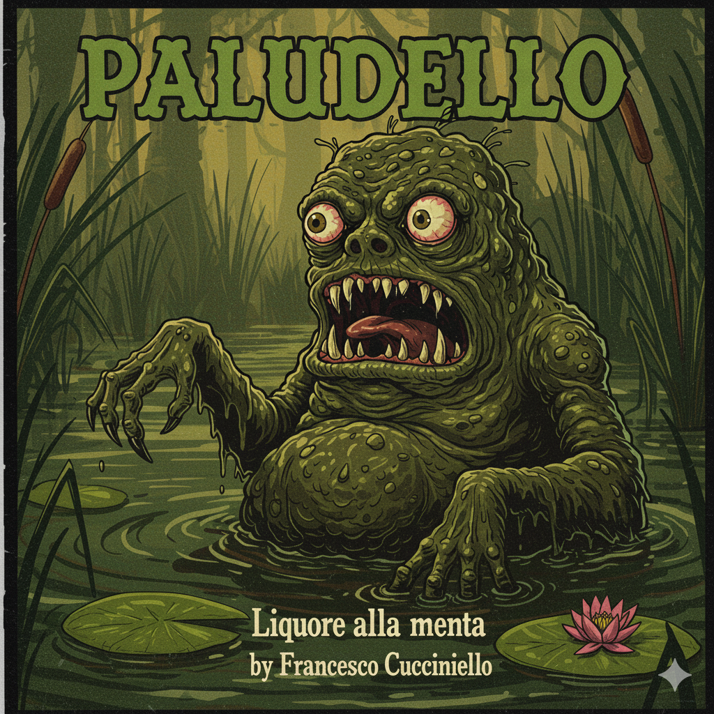

Liquore alla menta fatto in una cantina di Avellino da una persona sola che non ha tempo per il marketing.
Niente storie di nonni, niente storytelling, niente packaging carino. Solo erbe raccolte in un fosso, alcool buono, e sei mesi di pazienza.
Se ti piace è tuo. Se non ti piace, amen.
> tocca la rana. > ti dirà se sei pronto.